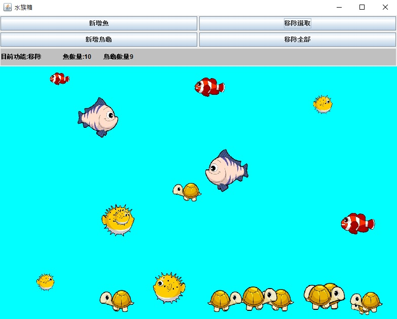
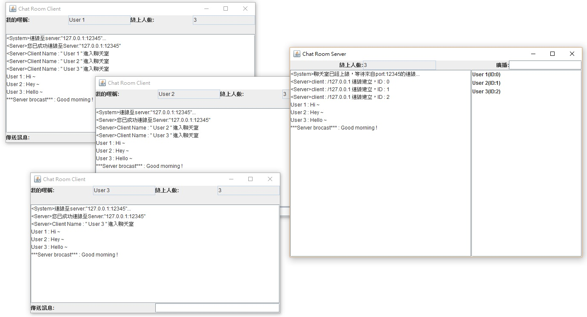
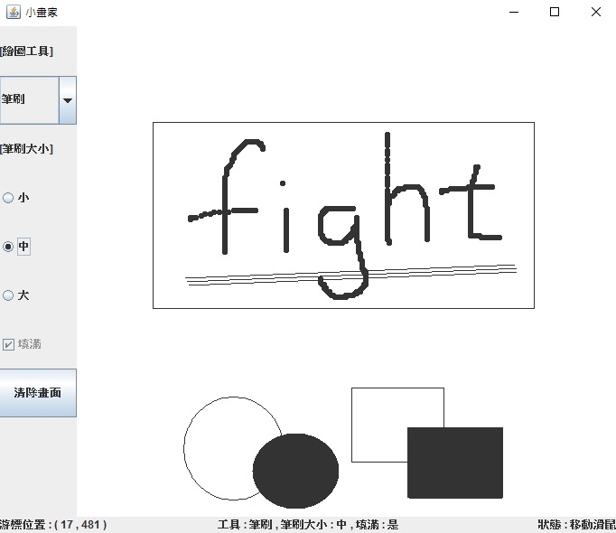
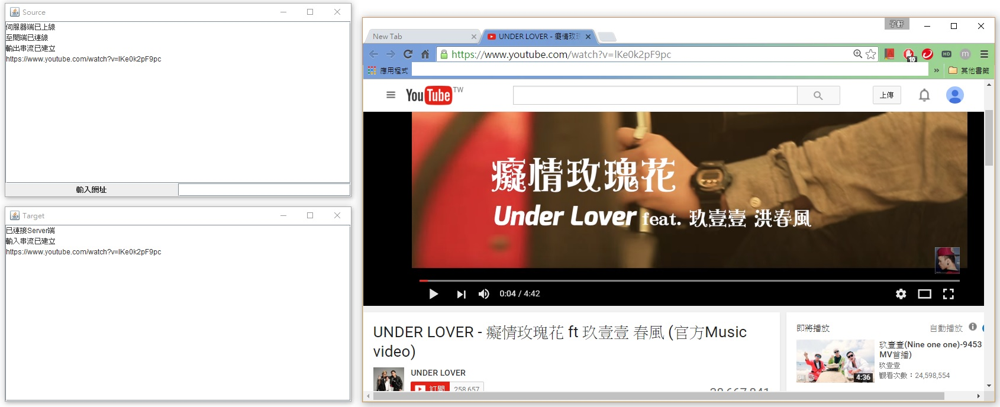
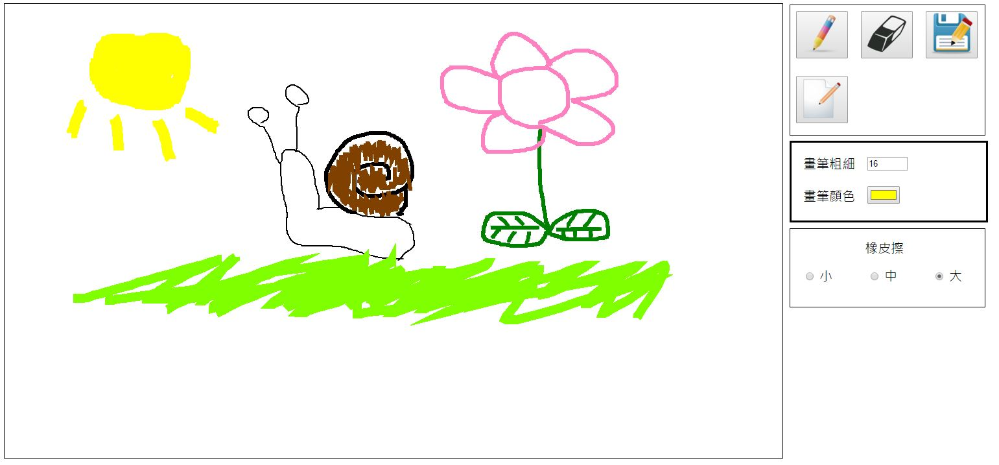
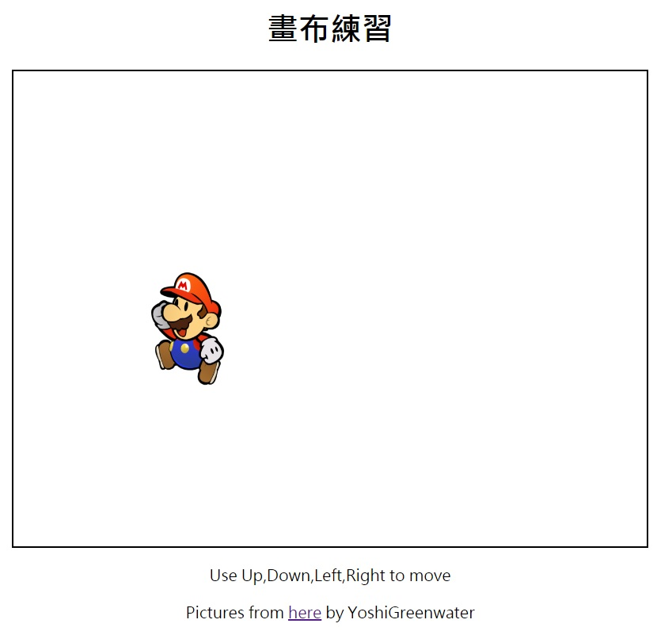
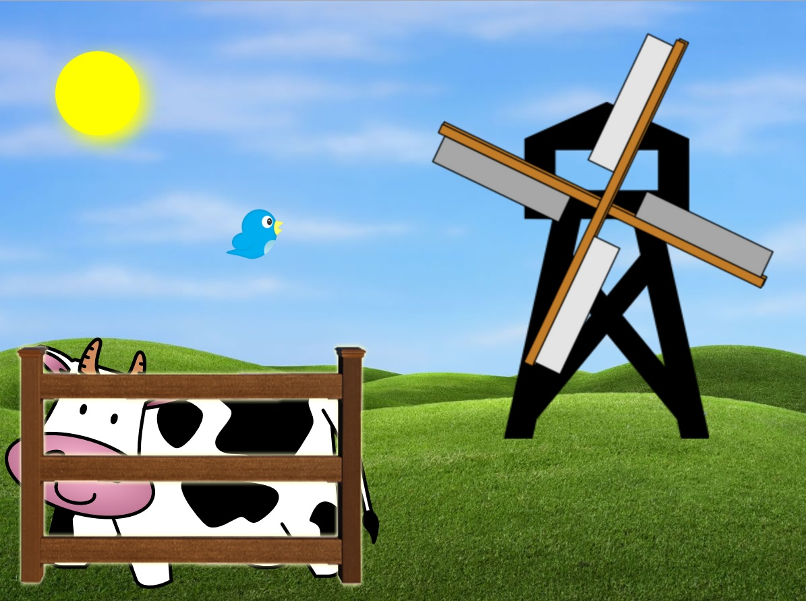
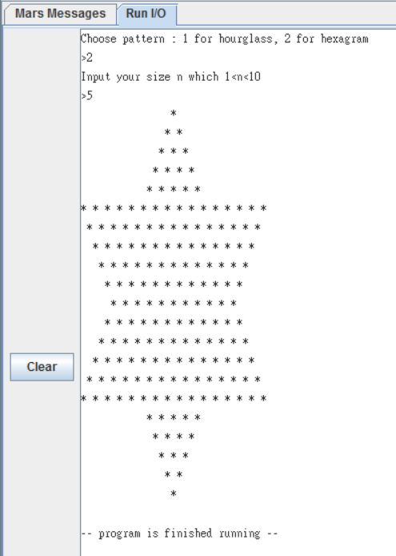

| Java - Aquarium 水族箱 |
|  |
GitHub網址用滑鼠在水族箱中新增、移除魚或烏龜魚會往各處游、烏龜沉到底後會向左右爬並且會隨時改變方向與速度每個魚或烏龜都是一執行序物件有定義自己的座標、移動速度、方向、圖片在畫布管理好這些物件並定時重畫就即可呈現 |
| Java - ChatRoom 聊天室 |
|  |
GitHub網址分為Server端與Client端，先開啟Server端後Client端透過Socket連至Server端Server端將每個連線建立成一個Thread訊息傳遞都是透過ObjectOutput/Input Stream每個訊息都是先傳至Server端再由Server端廣播至每個Client端因此Server端必須管理好這些連線收到訊息後向每個連線發送完成即時聊天 |
| Java - Painter 小畫家 |
|  |
GitHub網址主要是利用paintComponent方法與Graphics物件在Panel上畫出各種線條、形狀其中還用到了偵測滑鼠事件來控制畫圖原本是記下每個畫過的點然後定時repaint這些圖形這部份程式碼還可以優化再優化 |
| Java - RemotePlayMusic 遠端播音樂 |
|  |
GitHub網址原理跟聊天室一樣Client端將訊息傳至Server端只不過這裡的訊息要輸入網址Server端收到網址後便會用Chrome打開該網頁原意為在寢室內想要用室友電腦的音響播音樂但懶得實際走到電腦前打開Youtube故作出了超級懶人娛樂性質的小程式 |
| JavaScript - Painter 網頁小畫家 |
|  |
GitHub網址馬上試試看：Try it !網頁的小畫家是在Canvas上畫圖要先getContext("2d")方法取得畫圖物件可自行定義要畫的圖案、線條粗細、顏色甚至文字另外我有四種大小的畫筆cursor與三種大小的橡皮擦cursor功能的部份還可以再擴充! 畫筆在某些解析度的螢幕上會有偏差 !! 經過測試在Safari與IE無法正常執行 !! Google Chrome ! |
| JavaScript - MoveGame 移動遊戲 |
|  |
GitHub網址馬上試試看：Try it !要記下人物的X與Y座標位置並監聽按鍵的輸入以判斷是否移動移動後清空畫布並重畫人物在正確的位置上還可以擴充成迷你RPG遊戲有牆壁或NPC角色觸發事件等等 |
| CSS - Farm 農場 |
|  |
GitHub網址馬上看看：Try it !利用CSS position=absolute,left,top調整位置風車與鳥的動畫是用JavaScript的SetInterval定時改變位置或旋轉角度來達成整幅風景畫都是透過CSS來控制圖片的呈現 |
| MIPS - PrintStar 印星星 |
|  |
GitHub網址先呼叫System call印出提示訊息與等待輸入可選擇印出漏斗或星星形狀以及Size主要是用conditional jump/branch來實作for迴圈將圖形拆成四個部份做即可! 使用Mars4_5.jar編譯執行 ! |
| MIPS - Bezout's identity 貝祖定理 |
 |
GitHub網址根據貝祖定理表示 : 給定兩個不全為0的正整數A、B存在整數x、y，使得：Ax+By=DD為A、B的最大公因數在看了貝祖定理的演算法之後利用recursive的方式，需要將重要變數與return address存入與拿出堆疊即可算出x、y與D! 使用Mars4_5.jar編譯執行 ! |